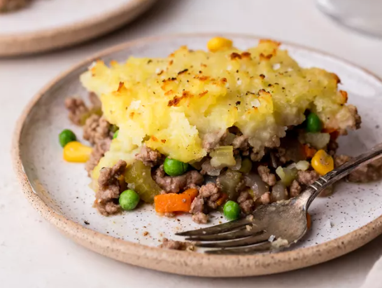

Recipe by Elise Bauer
Shepherd's Pie comes to us from England, and is traditionally made with lamb or mutton. A shepherd's pie is basically a casserole with a layer of cooked meat and vegetables, topped with mashed potatoes, and baked in the oven until the mashed potatoes are well browned.
When you dig in you get a spoonful of mashed potatoes, some crispy bits, meat, and vegetables all in one bite. It's pure comfort food.
While the potatoes are cooking, melt 4 tablespoons of the butter in a large sauté pan on medium heat. Add the chopped onions and cook until tender, about 6 to 10 minutes.
If you are including vegetables, add them according to their cooking time. Carrots should be cooked with the onions, because they take as long to cook as the onions do.
If you are including peas or corn, add them toward the end of the cooking of the onions, or after the meat starts to cook, as they take very little cooking time.
While the potatoes are cooking, melt 4 tablespoons of the butter in a large sauté pan on medium heat. Add the chopped onions and cook until tender, about 6 to 10 minutes.
If you are including vegetables, add them according to their cooking time. Carrots should be cooked with the onions, because they take as long to cook as the onions do.
you are including peas or corn, add them toward the end of the cooking of the onions, or after the meat starts to cook, as they take very little cooking time.
When the potatoes are done cooking (a fork can easily pierce), remove them from the pot and place them in a bowl with the remaining 4 tablespoons of butter. Mash with a fork or potato masher, taste, and adjust seasonings with salt and pepper.
Spread the cooked filling in an even layer in a large baking dish (such as a 9 x 13-inch casserole.
Spread the mashed potatoes over the top of the ground beef. Rough up the surface of the mashed potatoes with a fork so there are peaks that will get well browned. You can even use a fork to make creative designs in the mashed potatoes.
Place in a 400°F oven and cook until browned and bubbling, about 30 minutes. If necessary, broil for the last few minutes to help the surface of the mashed potatoes brown.
(Be careful when broiling using Pyrex or glass dishes, they have been known to shatter under the high heat of the broiler. It's not a worry if you are using a ceramic or metal casserole dish.)